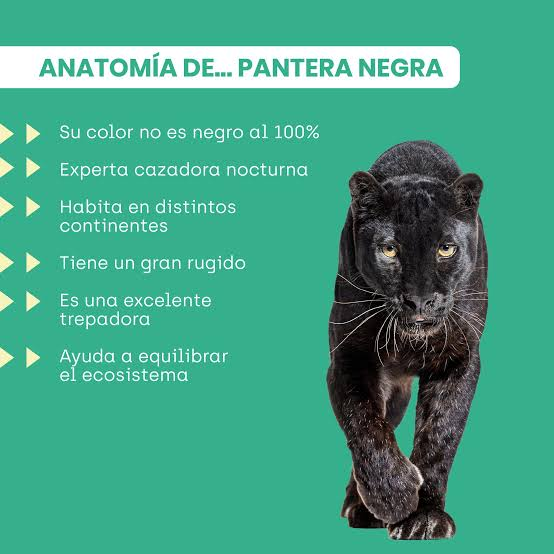

Entendido. La pantera negra es un felino salvaje que destaca por su pelaje
oscuro y brillante, resultado de una variación genética llamada melanismo.
No es una especie única de animal, sino la versión de color negro de dos grandes
felinos bien conocidos: el leopardo en África y Asia, y el jaguar en América. A pesar
de su coloración oscura, estos animales mantienen todas las características físicas de su
respectiva especie, incluyendo las manchas en forma de rosetas, las cuales son visibles si se
les observa de cerca o bajo luz directa del sol. Son depredadores solitarios, sigilosos y de hábitos
nocturnos, adaptados para camuflarse a la perfección en la densidad de las selvas y bosques tropicales donde
habitan.